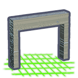

What happens when you die
The player character ships with 60 life (from data/configs/characters/player.cfg). That's a small bar — see the HP comparison below — and you will die. The good news: dying isn't punishing. You respawn at your last anchor and your QB1 drone companion can fetch your dropped items back for a qubit fee.
The death loop (data-grounded)
- You hit 0 HP.
- You respawn at your last spawn anchor (your ship, an outpost, or a landing beacon).
- The game fires the
RESPAWNEDevent — confirmed indata/configs/tutorialtips/17.cfg, which usesevent RESPAWNEDand the texturerequesting_items_from_qb1. That's the tutorial tip the engine pops up the first time you respawn. - Your items are held server-side. Your QB1 drone companion can deliver them back to you for qubits — no need to physically return to the death point.
- If you'd rather not pay, you can travel back to where you died and pick the items up from the Death Chest directly. Both paths are supported by the configs.
QB1 — your delivery drone
QB1 is the player's drone companion. Across data/configs/progression/, several tasks are categorised as QB1_REQUEST_* (e.g. QB1_REQUEST_MINING, QB1_REQUEST_BENCH, QB1_REQUEST_PISTOL), each delivering an item to the player on request — with onlyOwned TRUE, meaning it only fetches things you already own. After death, your dropped inventory is in that "owned" set, so QB1 is the recovery path. The post-death qubit cost shown in the UI is the delivery fee, not a penalty.
The exact qubit amount isn't in the static configs — it's calculated by the engine, almost certainly scaled by item value, distance, and / or player level. Expect "annoying but recoverable" rather than "losing-an-hour-of-mining."
The Death Chest (in-world tombstone)
If you'd rather walk back than pay QB1, the death point is marked by a Death Chest:
| Field | Value | |
|---|---|---|
 |
Identifier | dpl.deathchest |
| Display | Death Chest | |
| World model | data/models/c_objects/tombstone.glm (rendered as a voxel tombstone) | |
| Invincible | True (mobs and explosions can't destroy it) |
It's flagged invincible TRUE and isHidden TRUE in the catalog — combat near your corpse can't erase your stuff, and it doesn't show up on Recipes / Encyclopedia listings because it's spawned by the engine, not crafted.
Doctors at outposts
NPCs with the DOCTOR interaction live at most outposts. They heal you back to full life and clear status effects — not a revival service (death has already finished), but a follow-up. Doctor stats:
| Field | Value |
|---|---|
| Interaction type | DOCTOR |
| Life | 1000 (effectively unkillable — they're plot-armoured) |
| Shield capacity | 10000 (extra invulnerability) |
| Default weapon | wep.rifle.sma15e.3 |
HP comparison — why you're fragile
The player's 60 HP only makes sense in context. Every character config in the game declares a flat life value:
| Team / role | Examples | HP range |
|---|---|---|
| PLAYER | player.cfg | 60 |
| Friendly story NPCs | casascutum, helioctus, npc_knight, ragnhild, queen_atia | ~1000 |
| Villagers / police / soldiers | npc_villager, npc_police, soldier_* | 40 – 1000 |
| Pirates (early game) | n_pirate_pistol, n_pirate_ranged | 40 – 80 |
| Pirates (mid / late) | pirate_assault, pirate_melee, elite_pirate_rocket | 80 – 120 |
| Zombies | zombie_fast, zombie_boom, zombie_elite_* | ~160 (boomer) |
Friendly questgivers are deliberately invulnerable-tier (1000 HP); they're not balanced against you. Quest stages depend on them being present.
How to keep the qubit bill down
- Wear a Suit. Every suit tier adds raw HP via its
m_attributes. Suit 4 (the motherboard-gated craft) roughly doubles your effective life. - Carry batteries. They refill stamina, which feeds dodge and sprint — your real survivability is more about not getting hit than tanking hits.
- Keep a Jetpack on the hotbar. Falls and surprise mob clusters are the most common causes of death past the first hour.
- Spawn a Landing Beacon (
dpl.ship.landing.beacon) before going into a known-dangerous biome so you respawn nearby and can walk back to your Death Chest for free instead of paying QB1. - Don't fight Zombie Boomers in melee. 160 HP and they explode on death.
- Save before risky raids. Cubic Odyssey's save system is fragile (autosaves can bury good manual saves; see the CubicOdysseyVault project). Don't rely on autosave alone.
What you don't lose, ever
- Skill XP — Mining, Trading, Crafting, etc. progression is preserved.
- Recipes / blueprints — these are account-level (see
93_blueprints.sav). - Outpost perks & structures — your bases are unaffected.
- Quest progress — quest state is in
93_quests.savand survives death. - Ships you weren't piloting — only the ship you were in is affected; docked ships are safe.
- Inventory items — recoverable for a qubit fee via QB1, or for free if you walk back to your Death Chest.